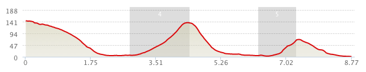

This hike traces the south western coast of Lautau from Shek O.
Tips: Catch bus 11 from Tung Chung, alight after the bridge over the reservoir. Continue for around an hour and take the first trail on the left after the waterfall.